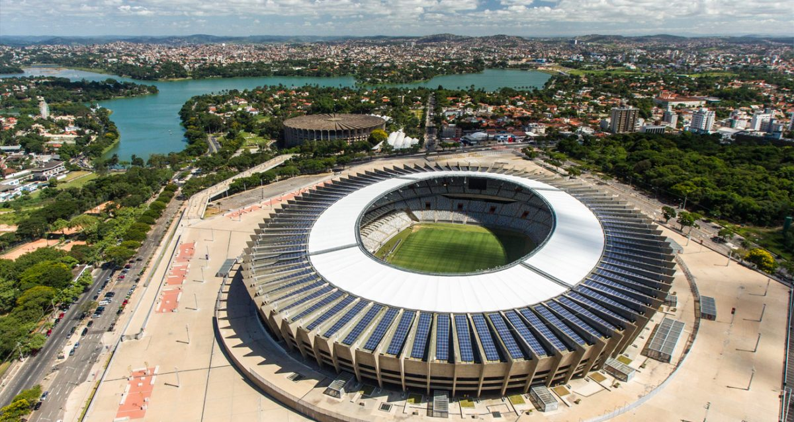
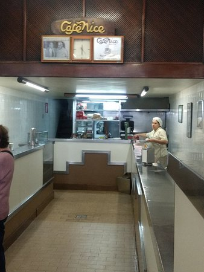
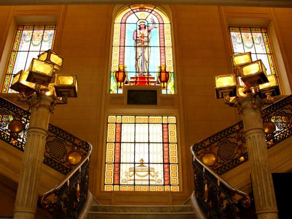

Belo Horizonte

Belo Horizonte, capital do estado de Minas Gerais, é um destino turístico de grande relevância no Brasil, reconhecida pela sua hospitalidade, rica cultura, culinária famosa e charme urbano. A cidade se destaca por ser um ponto de convergência entre modernidade e tradição, oferecendo aos turistas uma combinação única de atrações culturais, históricas e gastronômicas.
Belo Horizonte é considerada uma das capitais mais dinâmicas do país, com uma crescente cena artística, uma vibrante vida noturna e várias opções de lazer ao ar livre. Sua localização também a torna uma excelente base para explorar outras regiões de Minas Gerais, como as históricas cidades de Ouro Preto, Mariana e Tiradentes, que estão a poucas horas de distância. A cidade tem uma infraestrutura de turismo bem desenvolvida, com diversos museus, praças, parques e bairros tradicionais, além de ser um centro de gastronomia, com um foco especial na culinária mineira.
Principais pontos turísticos
- Praça da Liberdade
- Igreja de São José
- Parque das Mangabeiras
- Mineirão e Museu Brasileiro do Futebol 
- Lagoa da Pampulha
A Praça da Liberdade é um dos cartões-postais mais importantes de Belo Horizonte. Cercada por casarões históricos e museus, a praça é um marco da cidade, com belos jardins e arquitetura imponente. É um local perfeito para passeios tranquilos e para conhecer um pouco mais sobre a história da cidade.
A praça é um centro cultural, pois abriga o Circuito Liberdade, um conjunto de museus e centros culturais, como o Museu das Minas e do Metal e o Centro Cultural Banco do Brasil (CCBB), tornando-se um ponto de visitação obrigatória para quem deseja explorar a história e arte de Belo Horizonte.
A Igreja de São José é uma das mais tradicionais de Belo Horizonte e possui uma arquitetura neoclássica impressionante. Localizada na Praça da Liberdade, a igreja tem grande valor histórico e é um ponto turístico importante tanto pela sua beleza quanto pela sua relevância religiosa.
A igreja é um importante símbolo religioso e histórico de Belo Horizonte, sendo também um ponto de contemplação e um marco arquitetônico na cidade.
O Parque das Mangabeiras é um dos maiores e mais visitados parques urbanos da cidade, com uma vasta área de lazer e recreação, além de trilhas e áreas para piqueniques. A vista do mirante oferece uma panorâmica incrível de Belo Horizonte.
O parque é uma das melhores opções para quem deseja fugir do agito da cidade e aproveitar a natureza, sendo ideal para atividades ao ar livre, como caminhadas, observação da fauna e flora, e para aproveitar um dia de lazer.
O Mineirão é um dos estádios mais emblemáticos do Brasil e sede de grandes partidas de futebol. O estádio passou por uma modernização e abriga o Museu Brasileiro do Futebol, onde os visitantes podem aprender sobre a história do futebol brasileiro e se conectar com a paixão nacional.
Além de ser um ícone do esporte, o Mineirão é um símbolo do orgulho mineiro, e o museu oferece uma experiência interativa para os fãs de futebol, sendo uma visita imperdível para quem visita a cidade.
A Lagoa da Pampulha é um dos maiores cartões-postais de Belo Horizonte e um local ideal para passeios de barco e caminhadas. Ao redor da lagoa, estão algumas das obras mais conhecidas do arquiteto Oscar Niemeyer, como a Igreja São Francisco de Assis e o Museu de Arte da Pampulha.
A Lagoa da Pampulha é considerada um Patrimônio Cultural da Humanidade pela UNESCO e um ótimo local para o turismo, com a possibilidade de desfrutar de passeios turísticos, arte e cultura em um só lugar.
Principais pontos gastronômicos
- Mercado Central de Belo Horizonte
- Localização: Centro de Belo Horizonte.
- Rua do Amendoim
- Localização: Região Central de Belo Horizonte.
- Restaurante Xapuri
- Localização: Região de Lagoa do Nado.
- Café Nice 
- Localização: Centro de Belo Horizonte.

O Mercado Central é um dos maiores e mais tradicionais mercados do Brasil. É o local perfeito para provar a comida mineira em sua essência, com uma vasta oferta de queijos, doces, embutidos, cachaças, frutas e artesanato. O ambiente também conta com restaurantes e bares que servem pratos típicos da região.
O Mercado Central é uma referência para os visitantes que desejam explorar a gastronomia de Minas Gerais. O local é considerado um ponto obrigatório para quem quer vivenciar a verdadeira culinária mineira.
A Rua do Amendoim é famosa por seus bares e restaurantes que servem petiscos típicos da culinária mineira, como o pão de queijo e a carne de sol com mandioca. A rua é uma das preferidas dos turistas e moradores para um happy hour.
Um excelente local para quem deseja conhecer melhor a culinária informal e tradicional de Belo Horizonte, com um ambiente descontraído e ótimos preços.
O Restaurante Xapuri é um ícone da culinária mineira, especializado em pratos típicos de Minas Gerais, como feijão tropeiro, frango com quiabo e costelinha de porco. O ambiente do restaurante é rústico e acolhedor, refletindo a cultura rural do estado.
Para quem busca uma experiência genuína da gastronomia mineira, o Xapuri é um dos melhores lugares para saborear pratos típicos e se imergir no clima acolhedor da cozinha rural mineira.
O Café Nice é um local tradicional de Belo Horizonte, ideal para quem busca experimentar o autêntico café mineiro acompanhado de quitandas caseiras, como pão de queijo e broa de milho.
Considerado um dos melhores cafés da cidade, o Café Nice é um ótimo lugar para começar o dia com uma típica refeição mineira, além de ser um lugar agradável para um bate-papo.
Principais pontos culturais
- Museu de Arte da Pampulha (MAP)
- Localização: Região da Pampulha.
- Centro Cultural Banco do Brasil (CCBB) 
- Localização: Centro de Belo Horizonte.
- Teatro Francisco Nunes
- Localização: Região da Lagoa do Nado.
- Praça do Papa
- Localização: Bairro Mangabeiras.
O Museu de Arte da Pampulha é um dos mais importantes centros culturais de Belo Horizonte e abriga um acervo de arte moderna e contemporânea, com exposições de artistas brasileiros e internacionais. A arquitetura do edifício também é um dos destaques, projetado por Oscar Niemeyer.
Este museu é um ponto turístico imprescindível para quem aprecia arte e cultura, especialmente as manifestações do modernismo brasileiro.
O CCBB de Belo Horizonte oferece uma programação variada com exposições de arte, teatro, cinema e música. O espaço é uma referência cultural na cidade e promove eventos de grande relevância para a cena artística mineira e brasileira.
O CCBB é um local indispensável para quem deseja explorar a produção cultural contemporânea de Belo Horizonte e do Brasil.
O Teatro Francisco Nunes é um dos mais importantes espaços culturais da cidade, dedicado à realização de peças teatrais, shows e espetáculos de dança. Com uma programação diversificada, o teatro é um centro de cultura e arte.
Para os amantes das artes cênicas, o Teatro Francisco Nunes é um local fundamental, oferecendo sempre uma excelente opção de lazer cultural.
A Praça do Papa é um ponto turístico famoso pela sua vista panorâmica da cidade, sendo um local ideal para caminhadas, piqueniques e contemplação. Ela também é palco de eventos culturais, shows e festivais de música.
Além de ser um excelente lugar para relaxar e admirar a cidade, a Praça do Papa é um local culturalmente ativo, com diversas apresentações de arte e cultura ao longo do ano.